1.7 高级（Advanced）
对应原始手册：## 16. Advanced | 对应 A320.md：## 2.7 高级（Advanced）
一、功能层级与界面总览
工作区入口说明：高级工具栏（Advanced Toolbar）是 IOS 的一个独立工作区，并非弹窗。教员需通过控制面板底部页脚（1.2.7）最右侧的 Workspace 按钮打开工作区切换菜单，选择「Advanced / 高级」进入本界面。进入后，当前监视器左侧将显示高级工具栏。控制面板底部各按钮的详细说明请参见 1.2.7 控制面板底部。
1.1 功能层级结构
飞机] B[Position
位置] C[Environment
环境] D[Intruders
入侵者] E[Comms
通信] F[Failure
故障] G[UPRT
预防与恢复训练] H[Resets/Freezes
重置/冻结] I[Recording
录制] end C --> C1[Weather Region
天气区域] C --> C2[Windshear & Microburst
风切变与微暴流] C --> C3[Icing
结冰] C --> C4[Time of Day
时段] C --> C5[Lighting
灯光] C --> C6[Airport Visual FX
机场视觉效果] C1 --> C1a[Multiple Weather Airports
多机场天气] C1 --> C1b[Save/Recall Scenario
保存/调用场景] C6 --> C6a[Runway Conditions
跑道条件] C6 --> C6b[Visual Control
视觉控制] C6 --> C6c[Airport Lights
机场灯光] C6 --> C6d[Runway Default Lighting
跑道默认灯光] D --> D1[TCAS
TCAS] D --> D2[Random Traffic
随机交通] D --> D3[Approach Traffic
进近交通] D --> D4[ITP
同航迹程序] D1 --> D1a[Intruder Position
入侵者位置] D1 --> D1b[Vertical Flight Path
垂直飞行航径] D1 --> D1c[Scenario
场景] D1 --> D1d[Transponder Equipment
应答机设备] D1 --> D1e[Ownship Capacity
本机容量限制] E --> E1[ATIS
自动终端信息服务] E --> E2[ATC
空中交通管制] E2 --> E2a[Clearance Delivery
放行许可] E2 --> E2b[Ground Control
地面管制] E2 --> E2c[Tower
塔台] E2 --> E2d[Departure
离场] E2 --> E2e[Control
管制] E2 --> E2f[Approach
进近] G --> G1[Data Summary
数据汇总] G --> G2[Controls
控制] G --> G3[UPRT Scenarios
UPRT 场景] G1 --> G1a[Critical Parameters
关键参数] G1 --> G1b[Thumbnails
缩略图] G1 --> G1c[Exceedances
超限] G3 --> G3a[Maneuver Based
基于机动] G3 --> G3b[Scenario Based
基于场景] I --> I1[FSC/Recall
飞行状态捕捉/调用] I --> I2[FMS Memory Save/Recall
FMS 内存保存/召回] style Main fill:#dbeafe,stroke:#2563eb,stroke-width:2px
1.2 界面结构
| 区域/控件 | 位置 | 功能说明 |
|---|---|---|
| 高级工具栏 Advanced Toolbar | 控制面板底部 → Workspace 菜单 → Advanced 按钮 → 当前监视器左侧 | 提供 9 组快速访问按钮，可修改飞机/位置/环境参数、触发故障、访问附加页面 |
| 飞机（Aircraft） | 工具栏第 1 个按钮 | 重量与平衡、服务与舱门控制（复用控制面板功能） |
| 位置（Position） | 工具栏第 2 个按钮 | 机场与重新定位、SLEW 位移（复用控制面板功能） |
| 环境（Environment） | 工具栏第 3 个按钮 | 多机场天气区域、风切变、结冰、时段、灯光、机场视觉效果 |
| 入侵者（Intruders） | 工具栏第 4 个按钮 | TCAS、随机交通、进近交通、ITP 场景设置 |
| 通信（Comms） | 工具栏第 5 个按钮 | ATIS 语音消息监控与编辑、ATC 六类消息模拟 |
| 故障（Failure） | 工具栏第 6 个按钮 | 触发故障、跳闸断路器、无线电台失效/重置 |
| UPRT | 工具栏第 7 个按钮 | 异常恢复训练：数据监控、记录、回放、MBT/SBT 场景触发 |
| 重置/冻结（Resets/Freezes） | 工具栏第 8 个按钮 | 复用控制面板页脚的重置与冻结选项 |
| 录制（Recording） | 工具栏第 9 个按钮 | 飞行状态捕捉/调用、FMS 内存保存/召回 |
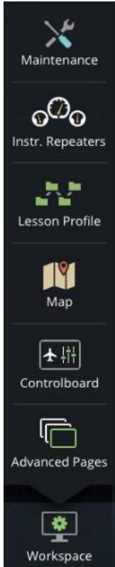
图 1：工作区卷展菜单（Workspace Roll Up Menu）
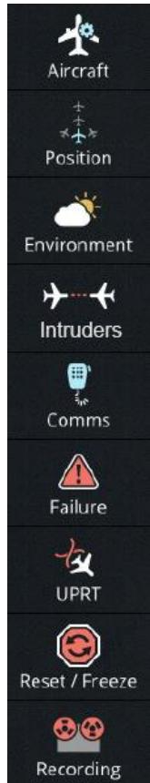
图 2：高级工具栏总览（Figure 144）
二、核心功能详解
2.1 飞机（Aircraft）
飞机按钮允许教员更改重量与平衡参数、与各种飞机舱门交互以及执行某些地面服务任务。
从高级菜单访问的飞机子页面提供的控制与从控制面板访问的重量与平衡（8.10）和服务与舱门（8.11）滑动面板相同。详见 1.2.4 飞机/航空器选项卡。
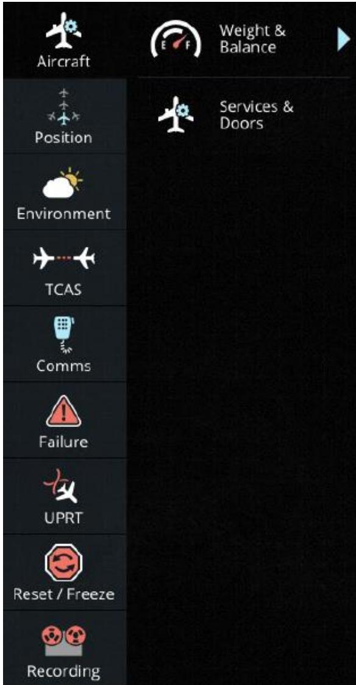
图 3：高级 — 飞机（Figure 145）
2.2 位置（Position）
位置按钮允许教员更改参考机场/跑道、重新定位和移动飞机。
从高级菜单访问的位置子页面提供的控制与从控制面板访问的机场与重新定位（9.2）和SLEW 位移（7.3）滑动面板相同。详见 1.2.5 参考机场选项卡 与 1.2.3 当前条件选项卡。
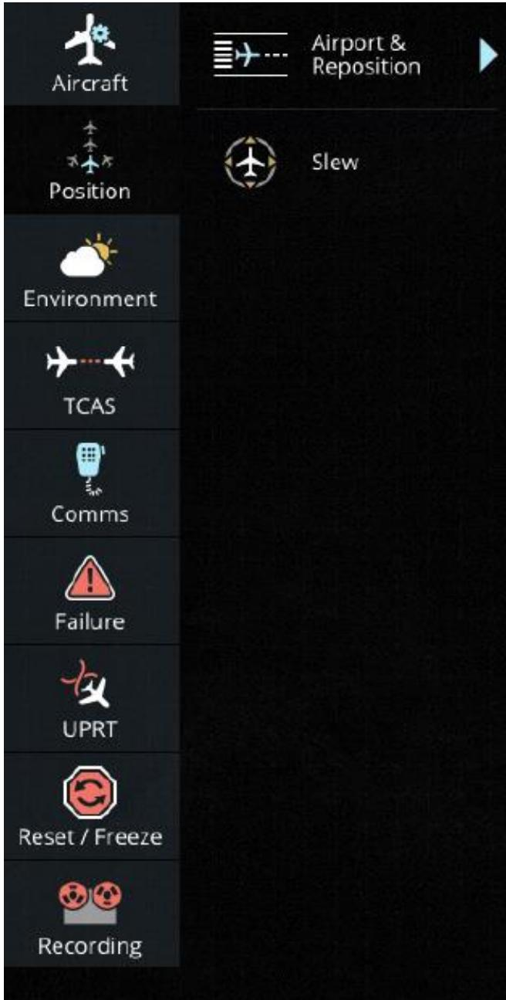
图 4：高级 — 位置（Figure 146）
2.3 环境（Environment）
环境包括多个子按钮，用于更改特定机场或航路区域的各种环境参数。
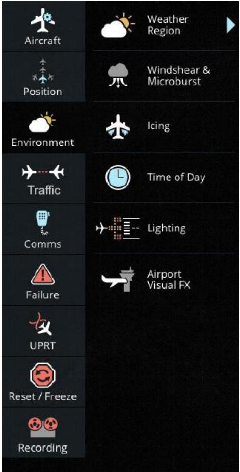
图 5：高级 — 环境（Figure 147）
2.3.1 天气区域（Weather Region）
天气区域提供所有必要的控制，以更改最多五个不同机场和航路天气条件的环境参数。
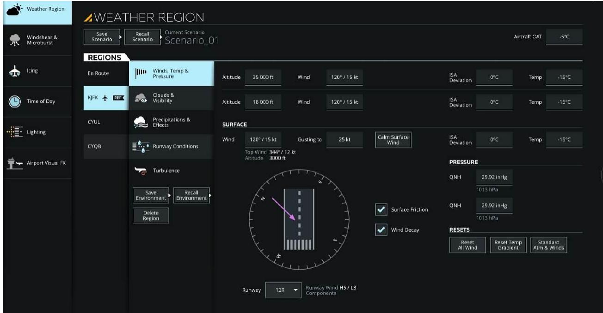
图 6：高级 — 天气区域（典型）（Figure 148）
REGIONS Tab 含义与自动切换逻辑
天气区域页面顶部通常显示一排可切换的 Tab，每个 Tab 代表一个独立的天气配置区域。教员选中某个 Tab 后，即可为该区域单独设置风、温度、气压、云、能见度、降水、跑道条件、湍流等参数。
| Tab 类型 | 典型示例 | 含义 | 生效条件 |
|---|---|---|---|
| 航路条件 En Route |
En Route | 飞机在两个机场之间巡航、远离所有已定义机场时使用的天气条件。它不是某个具体机场，而是「巡航阶段」的默认天气。 | ① 飞机在所有已定义机场的 50 海里半径之外；或 ② 参考机场与任何已定义机场都不匹配时，fallback 到 En Route |
| 机场 ICAO 代码 Airport ICAO Code |
KJFK | John F. Kennedy International Airport 纽约肯尼迪国际机场（美国） |
① 飞机距该机场 50 海里以内时，该机场的天气自动复制到环境天气；或 ② 该机场被设为「机场与重新定位」中的参考机场时生效 |
| 机场 ICAO 代码 | CYUL | Montreal-Pierre Elliott Trudeau International Airport 蒙特利尔特鲁多国际机场（加拿大） |
|
| 机场 ICAO 代码 | CYQG | Windsor International Airport 温莎国际机场（加拿大） |
整体切换逻辑总结：教员可以为最多 5 个不同区域分别配置天气。飞机飞到 KJFK 附近 50 海里内，环境天气自动变成 KJFK 的天气；飞到 CYUL 附近就自动变成 CYUL 的天气；如果在这些机场之间巡航、谁都不靠近，就自动使用 En Route 航路天气。系统会根据飞机当前位置或参考机场设置，自动帮你切换，不需要手动来回改。
常见疑问：图 6 里只有 4 个 Tab，为什么说最多支持 5 个区域？
- 图 6 中的 En Route + KJFK + CYUL + CYQG 只是当前已定义的 4 个示例区域，不是上限。
- 「最多 5 个」是系统总容量。如果当前已有 4 个区域，还可以通过 Add Region（添加区域） 按钮（见图 149）再添加 1 个。
- 添加的区域不限于图 6 中的机场，可以输入任意机场的 ICAO 代码（如 CYYZ、KBOS 等），也可以再添加一个航路条件。
- En Route 也占用 1 个区域名额。例如：En Route + 4 个机场 = 5 个区域，达到上限。
- 如果不需要当前某个机场，可以删除它，腾出名额添加训练所需的机场。
可更改的区域参数
| 参数类别 | 说明 |
|---|---|
| 风、温度和气压 Wind, Temperature & Pressure | 地面/中间层/对流层顶风、高度表设定（QNH）、温度 |
| 云和能见度条件 Cloud & Visibility | 云量、云底高、能见度距离 |
| 降水 Precipitation | 雨、雪等降水类型与强度 |
| 跑道条件 Runway Conditions | 跑道表面状态（干/湿/结冰等） |
| 湍流 Turbulence | 大气湍流强度设置 |
天气区域核心功能
| 功能 | 说明 |
|---|---|
| 添加区域 Add Region | 点击天气区域页面按屏幕说明添加，最多同时定义 5 个不同区域 |
| 保存场景 Save Scenario | 将当前区域天气参数保存为命名场景，供后续调用 |
| 调用场景 Recall Scenario | 按日期或字母顺序列出所有已保存场景，支持加载、重命名或删除 |
| 删除场景 Delete Scenario | 在调用场景弹出窗口中删除选定的天气场景 |
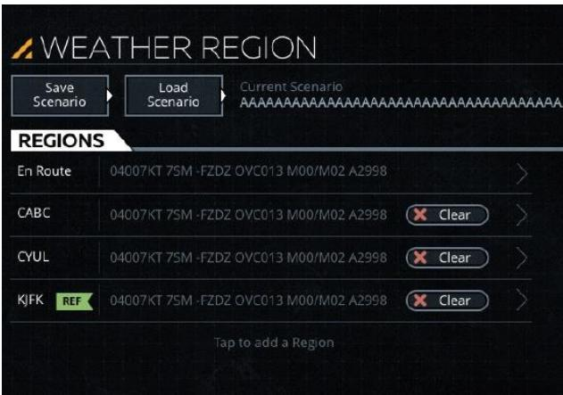
图 7：高级 — 添加区域（Figure 149）
多机场天气条件复制模式
有两种不同的模式决定何时将多机场天气条件复制到环境天气条件中。
| 模式 | 触发条件 | 复制逻辑 | 边界/ fallback 情况 |
|---|---|---|---|
| 第一种（按距离） Distance Mode | 飞机距该机场 50 海里以内 | 该机场特定条件复制到环境天气 | 50 海里外且定义了航路条件时，复制航路条件；若参考机场未定义天气条件，则适用航路天气条件 |
| 第二种（按参考机场匹配） Reference Airport Match | 「机场与重新定位」滑动面板中指定的参考机场与多天气机场匹配 | 匹配机场条件复制到环境天气 | 参考机场与多天气机场不匹配且定义了航路条件时，复制航路条件到环境天气 |
保存/调用天气场景详解
重要限制：「保存场景」功能仅保存天气参数，不保存也不包括活跃风暴、微下击暴流、预测性风切变、非预测性风切变或结冰条件。同样，「调用场景」功能仅从特定场景中调用天气参数。无论哪种情况，上述排除项的状态均不受「保存/调用场景」功能的影响。
| 维度 | 说明 |
|---|---|
| 保存参数范围 Saved Parameters | 海平面温度、中间层和对流层顶温度、高度表设定（QNH）、地面/中间层/对流层顶风 |
| 跨地形调用补偿 Cross-Terrain Recall Compensation | 从不同地形海拔位置调用时，地面温度和气压（QFE）会根据保留数据重新计算，以保持从海平面到中间高度的相同剖面；地面风和中间风仍适用于新位置 |
| 保存操作 Save Scenario Operation | 点击「保存场景」Save Scenario → 输入机场/航路天气场景名称 → 点击「保存」Save 或「取消」Cancel |
| 调用操作 Recall Scenario Operation | 点击「调用场景」Recall Scenario → 弹出窗口按日期或字母顺序列出所有已保存场景 → 可选择加载 Load / 以新名称保存 Save As / 删除 Delete |
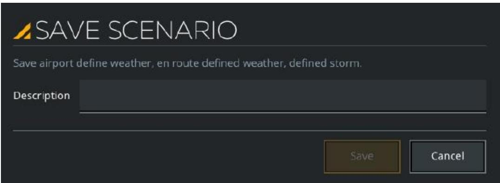
图 8：天气区域 — 保存场景（Figure 150）
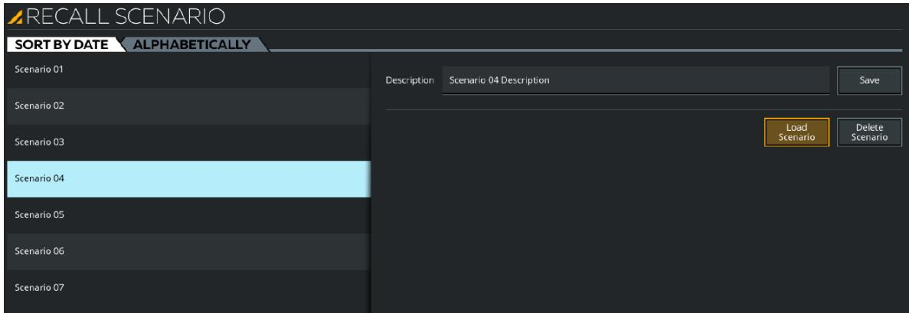
图 9：天气区域 — 调用场景（Figure 151）
2.3.2 风切变与微暴流（Windshear & Microburst）
点击按钮打开风切变与微暴流滑动面板，功能与参考机场选项卡中的功能完全相同。详见 1.2.5 参考机场选项卡 — 2.9 风切变与微暴流。
2.3.3 结冰（Icing）
点击按钮打开结冰滑动面板，功能与当前条件选项卡中的功能完全相同。详见 1.2.3 当前条件选项卡 — 2.12 结冰滑动面板。
2.3.4 时段（Time of Day）
点击按钮打开时段页面，允许进行一般时段更改（黎明、白天、黄昏、夜晚切换），功能与参考机场选项卡中的功能完全相同。详见 1.2.5 参考机场选项卡 — 2.3 时刻键盘/滑动面板。
2.3.5 灯光（Lighting）
灯光页面包含与机场重新定位选项卡中相同的灯光控制功能，外加三个附加按钮：
| 按钮 | 类型 | 说明 | 范围 |
|---|---|---|---|
| 停止排灯（Stop Bar） | Toggle | 正常状态点击点亮，激活状态点击熄灭 | — |
| 滑行道灯（Taxi） | Dropdown | 选择滑行道灯亮度 | Min=0, Max=5 |
| 城市灯（City） | Dropdown | 选择城市灯亮度 | Min=0, Max=5 |
2.3.6 机场视觉效果（Airport Visual FX）
机场视觉效果页面允许教员修改跑道条件和灯光、修改机场灯光、向视觉场景添加预录交通效果。包含四个选项卡：
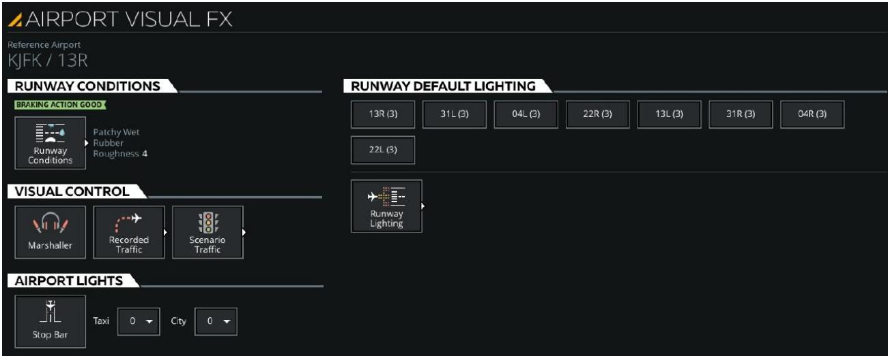
图 10：机场视觉效果（Figure 152）
| 选项卡 | 功能说明 |
|---|---|
| 跑道条件（Runway Conditions） | 显示当前跑道条件只读字段，可展开打开跑道条件滑动面板 |
| 视觉控制（Visual Control） | 引导员（Marshaller）切换显示/移除；录制交通、场景交通展开滑动面板 |
| 机场灯光（Airport Lights） | 停止排灯、滑行道灯、城市灯控制 |
| 跑道默认灯光（Runway Default Lighting） | 可展开显示跑道灯光滑动面板 |
2.3.6.1 跑道条件选项卡（Runway Conditions Tab）
| 控件 | 类型 | 说明 |
|---|---|---|
| 跑道条件只读字段 Runway Conditions Read-Only | 只读文本 | 显示当前跑道条件 |
| 跑道条件按钮 Runway Conditions Expandable | 可展开按钮 | 点击打开「跑道条件」滑动面板 |
2.3.6.2 视觉控制选项卡（Visual Control Tab）
| 按钮 | 类型 | 操作说明 | 禁用条件/备注 |
|---|---|---|---|
| 引导员（Marshaller） | Toggle | 正常状态点击在视觉场景中显示引导员；激活状态点击移除引导员。当飞机处于适当位置靠近登机口时，引导员将飞机引导至登机口。 | 飞机离地时禁用；飞机推出过程中禁用 |
| 录制的交通（Recorded Traffic） | 可展开按钮 | 显示「录制的交通」滑动面板，允许教员向视觉场景添加录制的交通场景效果 | — |
| 场景交通（Scenario Traffic） | 可展开按钮 | 显示「场景交通」滑动面板，允许教员向视觉场景添加录制的交通场景效果 | — |
2.3.6.3 机场灯光选项卡（Airport Lights Tab）
| 按钮 | 类型 | 操作说明 | 范围 |
|---|---|---|---|
| 停止排灯（Stop Bar） | Toggle | 正常状态点击点亮停止排灯；激活状态点击熄灭停止排灯 | — |
| 滑行道灯（Taxi） | Dropdown | 点击下拉按钮展开选项，选择滑行道灯光强度 | Min=0, Max=5 |
| 城市灯（City） | Dropdown | 点击下拉按钮展开选项，选择城市灯光强度 | Min=0, Max=5 |
2.3.6.4 跑道默认灯光选项卡（Runway Default Lighting Tab）
| 控件 | 类型 | 说明 |
|---|---|---|
| 跑道灯光（Runway Lights） | 可展开按钮 | 点击显示跑道灯光滑动面板 |
| 参考机场跑道默认灯光 Reference Airport RWY Default Lighting | — | 此选项卡包含用于控制所选参考机场跑道默认灯光的按钮 |
2.4 入侵者（Intruders）
入侵者页面允许教员通过在本机（飞机）空域周围插入入侵者来设置交通场景。包含四个子页面：TCAS、随机交通、进近交通、ITP。通过此页面，教员可以训练飞行机组应对多种类型的空中交通场景。
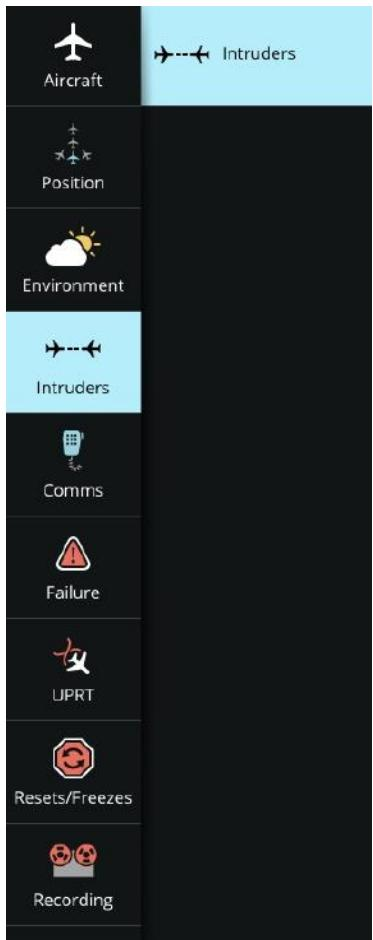
图 11：高级 — 入侵者（Figure 153）
2.4.1 TCAS
TCAS 页面包含必要的控制项，用于在训练课程中自定义入侵者的存在。它包括以下部分：入侵者位置、入侵者垂直航径、场景、入侵者应答机设备、本机能力限制。
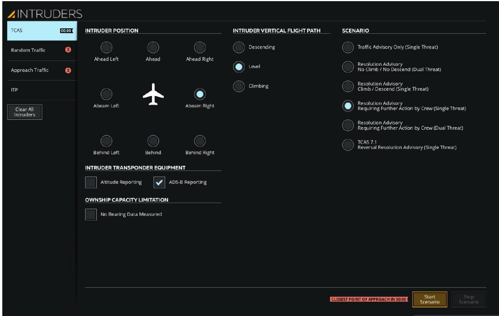
图 12：TCAS 页面（Figure 154）
入侵者位置部分（Intruder Position）
此部分包含互斥的单选按钮，允许教员设置接近的入侵者飞机相对于本机的方向。
| 方位 | 方位角 |
|---|---|
| 前方左侧 Ahead Left | -45° |
| 前方 Ahead | 0° |
| 前方右侧 Ahead Right | +45° |
| 正左方 Abeam Left | -90° |
| 正右方 Abeam Right | +90° |
| 后方左侧 Behind Left | -135° |
| 后方 Behind | 180° |
| 后方右侧 Behind Right | +135° |
入侵者垂直飞行航径部分（Intruder Vertical Flight Path）
此部分包含互斥的单选按钮，允许教员设置入侵者飞机相对于本机的垂直飞行航径。
| 航径 | 说明 |
|---|---|
| 下降 Descending | 将入侵者飞机置于本机上方，然后开始向本机下降 |
| 平飞 Level | 将入侵者飞机置于与本机相同的高度，然后开始向本机移动 |
| 爬升 Climbing | 将入侵者飞机置于本机下方，然后开始向本机爬升 |
场景部分（Scenario）
本节包含单选按钮，允许教员选择以下六种场景之一。每种场景的详细机动逻辑如下：
场景 1：仅交通咨询（单一威胁）Traffic Advisory Only (Single Threat)
- TCAS 仅生成交通咨询 TA
- 入侵者数量：1
- 本机 V/S 建议最大限制：±1000 fpm
入侵者从水平位置窗格中选择的方向接近，沿相同轨迹飞行，直到碰撞时间约为最接近点 CPA 前 100 秒。然后入侵者垂直路径计算为达到相对高度，使其通过 TA 高度限制内但超出 RA 高度限制。此机动在进入 RA 范围包线前 10 秒完成。
场景 2：决断咨询（双重威胁）不爬升/不下降 RA (Dual Threat) No Climb/No Descend
- TCAS 生成 RA，要求机组无需采取特定行动
- 入侵者数量：2
- 本机 V/S 建议最大限制：±200 fpm
两架入侵者中的一架从水平位置窗格中选择的方向接近，另一架位于相对方位，可在第一架入侵者方位 15~45 度之间变化。入侵者保持相同高度，直到碰撞时间约为 CPA 前 100 秒。
第一次机动计算为使入侵者始终保持在 RA 高度包线内 100~150 英尺的相对高度。当一架入侵者满足 TA 条件时，听到音频「TRAFFIC TRAFFIC」。入侵者在 RA 高度包线内稳定高度并保持平飞直到场景结束。
当第一架入侵者满足 RA 条件时，TCAS 给出预防性建议「MONITOR VERTICAL SPEED」。在发出「CLEAR OF CONFLICT」前，不应听到纠正性建议，此场景无需机组采取行动。
场景 3：决断咨询（单一威胁）爬升/下降 RA (Single Threat) Climb/Descend
- TCAS 生成 RA，要求机组爬升或下降以避免冲突
- 入侵者数量：1
- 本机 V/S 建议最大限制：±1000 fpm
入侵者从水平位置窗格中选择的方向开始，保持相同高度直到碰撞时间约为 CPA 前 100 秒。第一次机动计算为使其在进入 RA 距离包线前 10 秒达到 RA 高度包线内约 100 英尺的相对高度。
当入侵者满足 TA 条件时，首先听到音频「TRAFFIC, TRAFFIC」。接下来 15 秒内，入侵者垂直路径计算为在 CPA 处瞄准本机高度上方（或下方）100 英尺的目标高度。在此阶段发布纠正性咨询，机组必须快速平稳遵循，不得超出目标。入侵者以 1500~2000 fpm 继续下降（或爬升）直到 CPA 后 5 秒并在该高度稳定。在「CLEAR OF CONFLICT」前不再宣布其他纠正性咨询。
场景 4：决断咨询（单一威胁）爬升/下降后增加爬升/下降 RA (Single Threat) Climb/Descend then Increase
- TCAS 生成 RA，要求机组爬升或下降以避免冲突
- 入侵者数量：1
- 本机 V/S 建议最大限制：±1000 fpm
与场景 3 类似，但由于威胁飞机的机动，机组需要增加爬升/下降以消除冲突。入侵者以 2000~2500 fpm 继续下降（或爬升）直到 CPA 后 5 秒。
应发布第二次纠正性咨询以规避入侵者。机组必须快速平稳遵循新的纠正性咨询，不得超出目标。在「CLEAR OF CONFLICT」前不再宣布其他纠正性咨询。
场景 5：决断咨询（双重威胁）爬升/下降后改平 RA (Dual Threat) Climb/Descend then Level Off
- TCAS 生成 RA，要求机组爬升或下降以规避冲突
- 入侵者数量：2
- 本机 V/S 建议最大限制：±1000 fpm
两架入侵者相对于本机呈非对称布局（水平和垂直平面）。一架从水平位置窗格所选方向开始，另一架位于相对方位角，与第一架相差 15~45 度。每架入侵者保持相同高度直到碰撞时间约为 CPA 前 100 秒。一架从本机上方通过，另一架从下方通过。
第一架入侵者机动计算为使其在进入 RA 范围包线前 10 秒达到 RA 高度包线内的相对高度（约 100~150 英尺）。当满足 TA 条件时，听到「TRAFFIC TRAFFIC」。接下来 15 秒内垂直路径计算为在 CPA 处目标高度位于本机高度上方（或下方）100 英尺。发布纠正性咨询，指令机组朝向第二架入侵者飞行。
此前未成为 RA 的第二架入侵者变为 RA，发布第二次纠正性咨询「LEVEL OFF, LEVEL OFF」。在「CLEAR OF CONFLICT」前不再发布其他纠正性咨询。
场景 6：反向决断咨询（单威胁）在 FL210 以上执行 Reversal RA (Single Threat) Above FL210
- TCAS 生成 RA，要求机组爬升或下降以避免冲突
- 入侵者数量：1
- 本机 V/S 建议最大限制：±1000 fpm
机组需在初始 RA 后执行反向爬升/下降机动，以解决因入侵者机动导致的冲突。场景开始时，入侵者从水平位置窗格中选择的位置接近，与本机处于同一高度。入侵者路径会持续重新计算以镜像本机的路径，直到本机发出第一次决断咨询。
当 TCAS 检测到入侵者未解除时，本机将发出第二次 RA（即反向 RA）。当本机在反向 RA 后尝试机动时，入侵者解除并沿自身轨迹飞行。
例如在 FL150 时：约 45 秒时发出 TA「TRAFFIC TRAFFIC」；约 30 秒时发出 RA「CLIMB CLIMB」或「DESCEND DESCEND」；CPA 前约 20 秒时发出反向 RA「DESCEND, DESCEND NOW」或「CLIMB, CLIMB NOW」。
注意：对初始 RA 的加速度响应约为 0.25g，而对反向 RA 的加速度响应约为 0.35g。
WARNING 警告：本机必须在稳定飞行状态下进行 TCAS 场景训练。DESCEND DESCEND 垂直引导在以下情况下被抑制：
- 下降时低于 1000 ft AGL
- 爬升时低于 1200 ft AGL
应答机设备（Transponder Equipment）
此部分包含复选框，允许教员设置入侵者应答机的询问模式。
| 参数 | 状态 | 说明 |
|---|---|---|
| 高度报告 Altitude Reporting | 选中 | 将入侵者应答机模式设置为 Mode C/S，传输高度。TCAS 将发出 TA 和 RA（如有） |
| 未选中 | 设置为 Mode A，不传输高度。TCAS 显示器上入侵者符号不带高度标签，不发出 RA | |
| ADS-B 报告 ADS-B Reporting | 选中 | 允许入侵者应答机传输 ADS-B 信息（位置、速度、飞行方向、纬度、经度、垂直速度等） |
| 未选中 | 不允许传输 ADS-B 信息 |
本机容量限制（Ownship Capacity）
此部分包含一个复选框，用于允许或禁止从 TCAS 天线测量方位。
| 参数 | 状态 | 说明 |
|---|---|---|
| 未测量方位数据 Unmeasured Bearing Data | 选中 | 禁止从 TCAS 天线测量方位 |
| 未选中 | 允许从 TCAS 天线测量方位 |
启动/停止场景（Start/Stop Scenario）
| 按钮 | 说明 |
|---|---|
| 启动场景 Start Scenario | 点击以激活入侵者场景 |
| 停止场景 Stop Scenario | 点击以停止入侵者场景 |
2.4.2 随机交通（Random Traffic）
「随机交通」页面包含必要的控制项，用于：插入任意数量的入侵者、选择高度间隔模型、选择入侵者的应答器设置和本机容量限制。
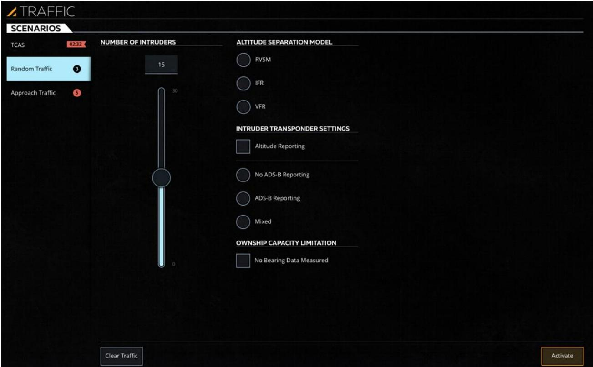
图 13：随机交通页面（Figure 155）
| 部分 | 功能说明 |
|---|---|
| 入侵者数量 Number of Intruders | 通过以下方式设置：① 将滑块移动到所需数量 ② 触摸输入文本字段并使用键盘输入入侵者数量 |
| 高度间隔模型 Altitude Spacing Model | RVSM（航路垂直间隔最小值）、IFR（仪表飞行规则）、VFR（目视飞行规则）。所选数量的入侵者将按照所选模型放置 |
| 应答器设置 Transponder Settings | 高度报告、无 ADS-B 报告、ADS-B 报告、混合 |
| 本机容量限制 Ownship Capacity | 同 TCAS 页面 |
| 清除随机交通 Clear Random Traffic | 点击此按钮以清除所有随机交通 |
2.4.3 进近交通（Approach Traffic）
「进近交通」页面允许教员：插入 1 到 3 个入侵者、选择高度间隔模型、选择入侵者的应答器设置和本机容量限制。通过此页面，教员可在训练场景中引入入侵机，以评估和训练飞行机组在进近阶段应对空中交通场景的能力。
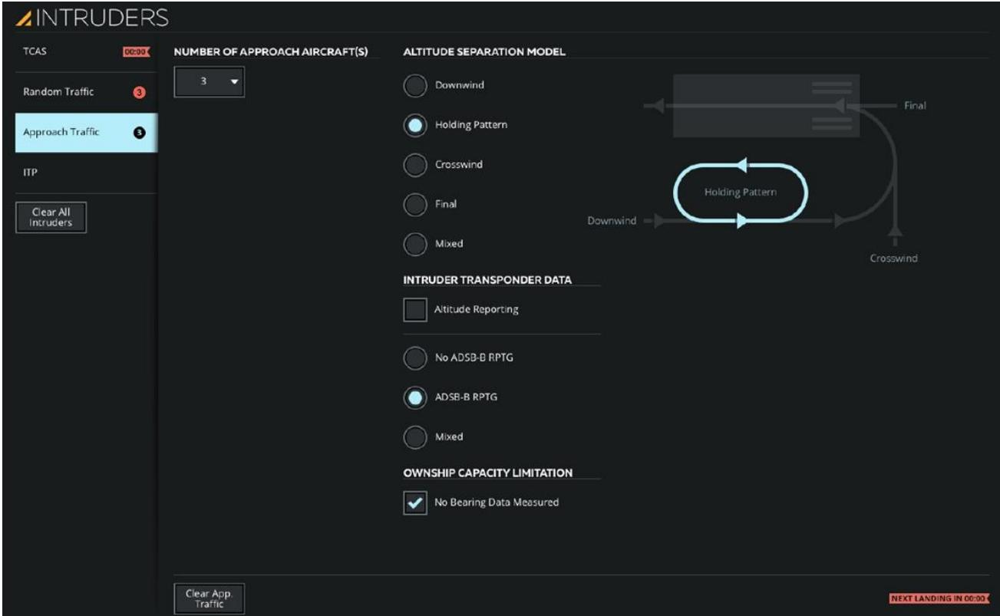
图 14：进近交通页面（Figure 156）
| 部分 | 功能说明 |
|---|---|
| 入侵者数量 Number of Intruders | 下拉按钮展开选项，点击选择 1~3 个 |
| 高度间隔模型 Altitude Spacing Model | 下风、等待航线、侧风、五边、混合。所选数量的入侵机将放置在所选模型上 |
| 应答器设置 Transponder Settings | 同随机交通页面 |
| 本机容量限制 Ownship Capacity | 同 TCAS 页面 |
| 清除进近交通 Clear Approach Traffic | 点击此按钮可清除所有进近交通 |
2.4.4 同航迹程序（ITP）
ITP 页面允许教员查看预定义场景列表、创建/编辑/删除 ITP 场景、将场景激活到训练场景中。包含预定义场景和快速场景两个选项卡。通过此页面，教员可以激活各种类型的 ITP 场景，其中多个入侵机位于本机空域周围的不同位置，以评估和训练飞行机组如何应对此类情况。
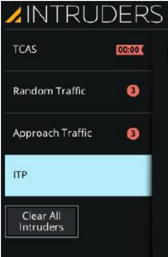
图 15：ITP（Figure 157）
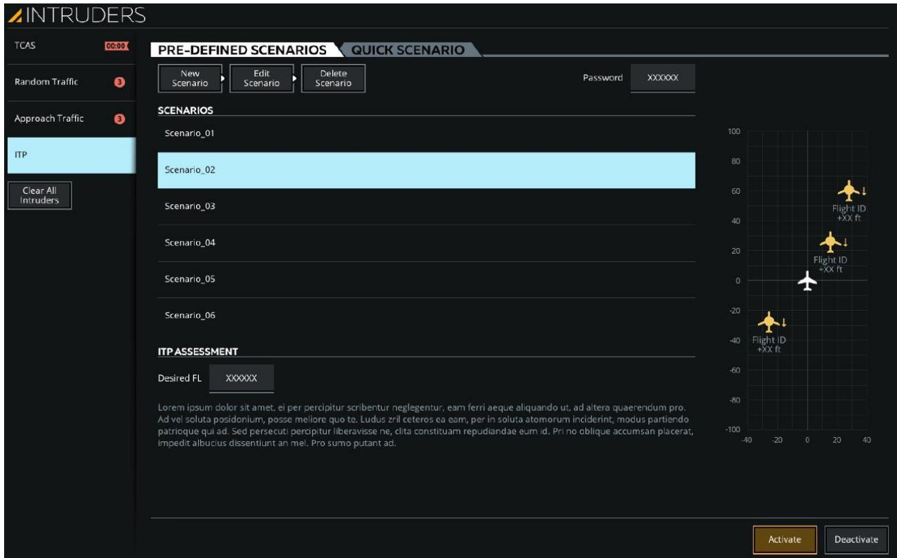
图 16：ITP 页面（Figure 158）
ITP 主功能一览
| 功能 | 说明 |
|---|---|
| 场景列表 Scenario List | 通常 CAE 提供 12 个预定义场景，名称一目了然 |
| ITP 评估 ITP Assessment | 在激活前评估在期望飞行高度层（FL）上 ITP 机会是否可行（或不可行） |
| ITP 地图 ITP Map | 预览所选场景中所有入侵者与本机的相对位置，显示飞机符号、飞行 ID 和相对高度 |
| 新场景/编辑场景/删除场景 New / Edit / Delete Scenario | 创建、修改或删除 ITP 场景，删除前需确认 |
| 快速场景 Quick Scenario | 快速设置 ITP 场景，可自定义每个入侵者参数并评估 |
| 入侵者数量指示 Intruder Count Indicator | 红色徽章表示当前场景中入侵者的数量 |
| 清除所有入侵者 Clear All Intruders | 点击此按钮可清除训练场景中的所有入侵者 |
预定义场景选项卡（Predefined Scenario Tab）
| 子模块 | 功能说明 |
|---|---|
| 场景部分 Scenario | 列出可用的 ITP 场景。通常 CAE 提供 12 个场景，每个场景的名称都一目了然 |
| ITP 评估部分 ITP Assessment | 根据所选 ITP 场景，在将所选场景激活到训练课程之前，评估 ITP 机会在所需飞行高度层（FL）上是否可行（或不可行）。 操作链路：教员选择一个 ITP 场景 → 输入所需飞行高度层 → 观察 ITP 评估部分中的消息 → 决定是否激活该场景 |
| ITP 地图 ITP Map | 地图提供所选 ITP 场景的预览。它显示所选场景中所有与本机（飞机）相关的入侵者。对于每个入侵者，地图提供飞机符号、飞行 ID 和相对高度 |
| 新场景 New Scenario | 点击「新场景」按钮以显示「新场景」页面。此页面包含允许教员定义给定场景中多个入侵者参数的控制项。点击入侵者展开按钮会显示所选入侵者的「编辑入侵者」页面 |
| 编辑场景 Edit Scenario | 点击「编辑场景」按钮以显示「编辑场景」页面。此页面包含允许教员修改给定场景中多个入侵者参数的控制项。点击入侵者展开按钮会显示所选入侵者的「编辑入侵者」页面 |
| 删除场景 Delete Scenario | 点击「删除场景」按钮以从「场景」列表中移除所选场景。在永久删除所选场景之前，会显示一个确认弹出窗口 |
快速场景选项卡（Quick Scenario Tab）
此选项卡包含允许教员快速设置 ITP 场景的必要控制项。
| 子模块 | 功能说明 |
|---|---|
| 入侵者部分 Intruders | 列出可定制的可用入侵者 |
| ITP 评估部分 ITP Assessment | 在包含多个入侵者的 ITP 场景中，允许教员在激活前评估在期望飞行高度层（FL）上 ITP 机会是否可行（或不可行）。教员可自定义每个入侵者的参数，输入期望飞行高度层，并观察 ITP 评估部分的消息，以决定是否激活该场景 |
| ITP 地图 ITP Map | 提供正在创建的 ITP 场景预览。它显示场景中所有入侵者与本机（飞机）的相对位置。对于每个入侵者，地图提供飞机符号、飞行 ID 和相对高度 |
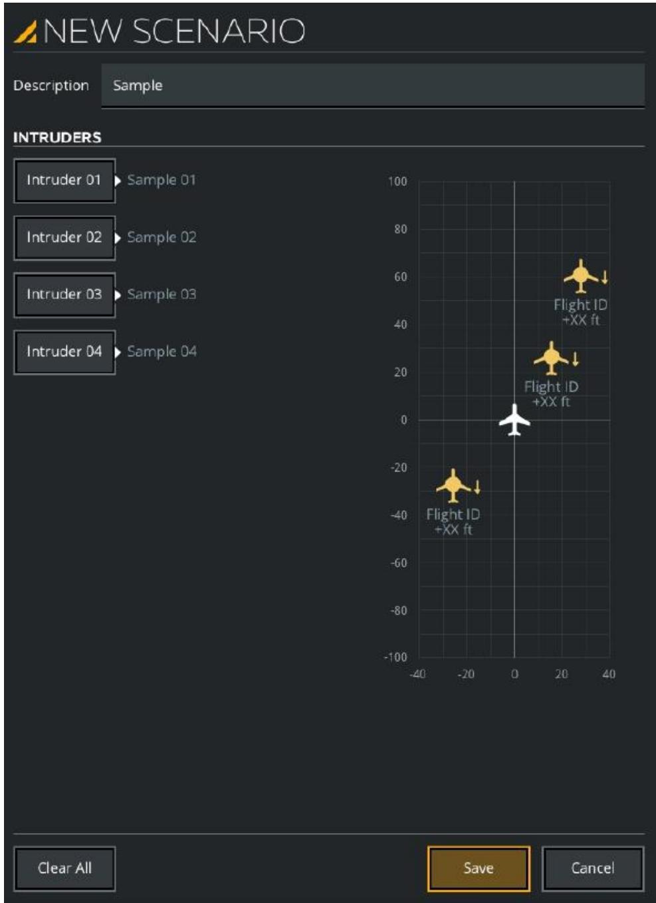
图 17：新场景页面（Figure 160）
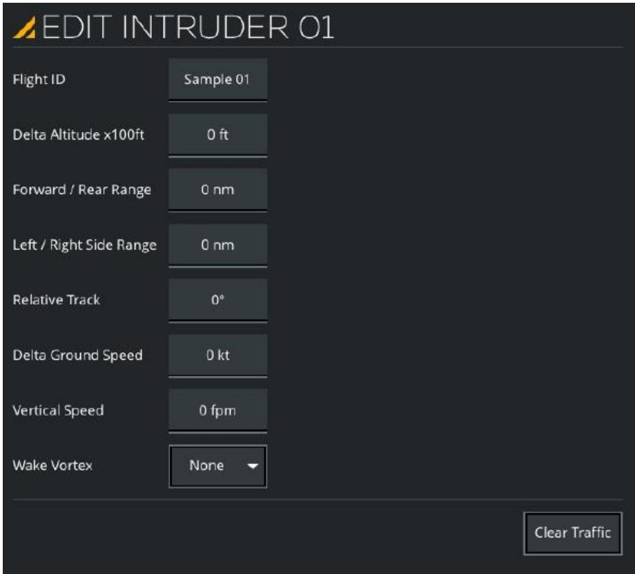
图 18：编辑入侵者页面（Figure 161）
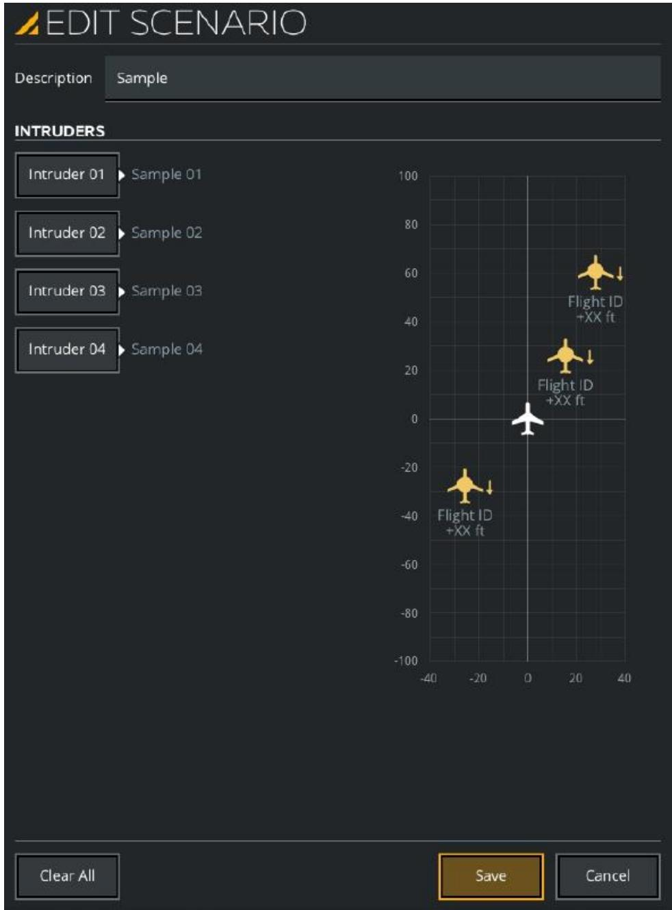
图 19：编辑场景页面（Figure 162）
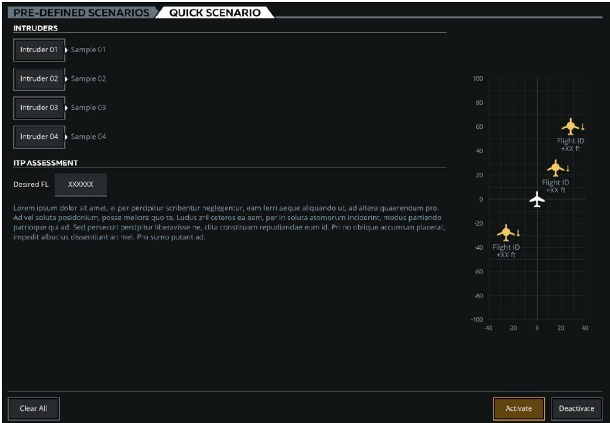
图 20：快速场景选项卡（Figure 163）
入侵者数量红色徽章指示
2.5 通信（Comms）
通信按钮提供对通信和数据链页面的访问，允许教员更改音频监听、教员发射、机组发射或呼叫控制，以及设置各种类型的数据链参数。同时支持修改 ATIS 消息和 ATC 消息。
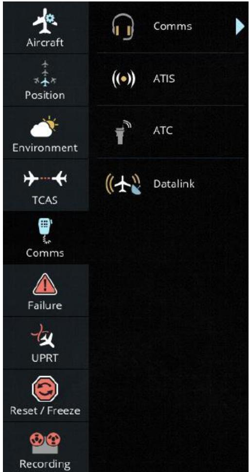
图 21：高级 — 通信（Figure 164）
2.5.1 ATIS（自动终端信息服务）
ATIS 页面允许教员监控参考机场以及任何已定义的机场/航路环境机场（或简称环境机场）当前可用的 ATIS 语音消息。选定的参考机场 ICAO 代码显示在机场选项卡正下方。ICAO 机场代码旁的绿色 REF 标志表示这是参考机场。ATIS 消息有两种模式：自动和手动。
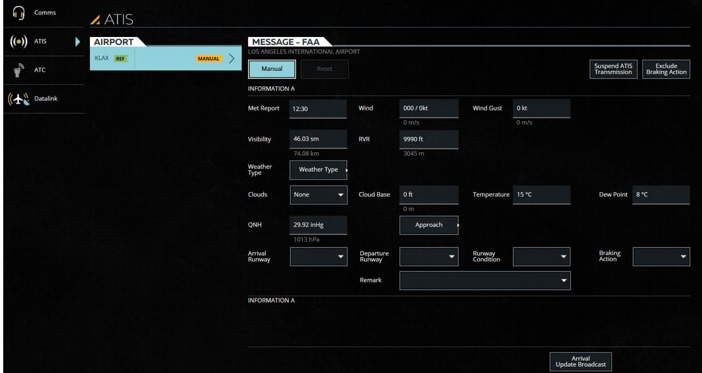
图 22：ATIS 页面（Figure 165）
ATIS 模式说明
| 模式 | 状态/行为 | 功能说明 |
|---|---|---|
| 自动模式 Automatic | 默认模式 | 正常情况下的默认模式 |
| 同步更新 | 参考机场和环境机场的 ATIS 消息会自动更新，以反映环境页面和机场/航路环境页面上的当前天气。每当教员在这些页面中输入天气变化时，该机场的 ATIS 消息会立即更新以反映此变化 | |
| 天气输入按钮 | ATIS 语音消息无法被覆盖，因此 ATIS 页面上的所有天气输入按钮均被禁用或灰显。然而，这些禁用或灰显按钮旁边的所有文本以白色显示，因为数值反映了实际的 ATIS 消息 | |
| 例外 | ATIS 页面上有两个按钮永远不会被禁用或变灰：进近（Approach）和备注（Remarks）。这是因为它们与机场环境页面上的天气无关。用户可以随时点击任一按钮、进行其他选择、点击更新广播（Update Broadcast）按钮，当前的 ATIS 信息将更新以反映这些选择 | |
| 手动模式 Manual | 启用方式 | 通过点击手动（Manual）按钮启用手动模式。这样做会启用 ATIS 页面上所有天气输入按钮。此时，教员可以进行新的选择，并点击更新广播以激活新信息 |
| 标志 | 允许教员覆盖某个机场的 ATIS 信息。当选择 ATIS 手动模式时，所选机场旁边会显示一个琥珀色 MANUAL 标志。在手动模式下，所有信息（INFORMATION）参数均可修改。当手动模式禁用时，所有信息参数将被禁用或变灰 |
ATIS 参数/控件一览
| 参数/控件 | 功能说明 |
|---|---|
| 机场选项卡 Airport Tab | 显示所选机场 ICAO 代码。绿色 REF 标志表示参考机场 |
| 手动（Manual） | 显示状态和选择启用 ATIS 信息手动模式，允许教员修改部分 ATIS 参数。当选择 ATIS 手动模式时，所选机场旁边会显示一个琥珀色 MANUAL 标志 |
| 重置（Reset） | 选择重置会导致页面上的修改参数更新，以反映当前的 ATIS 信息 |
| 暂停 ATIS 传输 Suspend ATIS Transmission | 显示状态和选择禁用 ATIS 传输 |
| 排除刹车作用 Exclude Braking Action | 显示状态和选择禁用刹车作用的语音播报 |
| 气象报告 Met Report / WX Report | 显示 GMT 报告时间，并允许修改 ATIS 信息的时间，而不影响模拟器的实际时间 |
| 风向风速 Wind | 显示状态和选择允许输入 ATIS 信息的风向（以度为单位）和风速（以所选单位：节/米每秒）。零风速时广播静风（Wind Calm） |
| 阵风 Wind Gust | 显示 ATIS 阵风值（以米每秒为单位），与模拟器实际值不同 |
| 能见度 Visibility | 显示状态和选择允许输入 ATIS 信息的能见度（以所选单位：公里/法定英里），与模拟器实际值不同。广播的 ATIS 信息中的单位反映信息来源的区域 |
| 跑道视程 RVR | 显示状态和选择允许输入 ATIS 信息的跑道视程（RVR）（以所选单位：米/英尺）。广播的 ATIS 信息中的单位反映信息来源的区域 |
| 天气类型 Weather Type | 显示当前 ATIS 信息的特殊天气状况，选择后显示天气类型页面 |
| 云 Clouds | 显示当前 ATIS 信息的云类型，选择后显示云类型列表 |
| 云底高 Cloud Base / Ceiling | 显示状态，并允许以所选单位（公制/英制）输入云底高度，用于 ATIS 信息广播中的云底信息。Min=0, Max=40000 英尺；Min=0, Max=12192 米 |
| 温度 Temperature | 显示状态，并允许以所选单位（摄氏度/华氏度）输入 ATIS 信息的地面温度（动态最小/最大值） |
| 露点 Dew Point | 显示状态，并允许以所选单位（摄氏度/华氏度）输入 ATIS 信息的露点温度。露点最大值将等于温度值，若温度设置低于露点，露点将自动调整为温度值（动态最小/最大值） |
| QNH QNH | 以所选单位（百帕/英寸汞柱）显示 ATIS 环境气压，并允许输入与实际模拟器海平面气压不同的气压值。广播的 ATIS 信息中的单位反映信息源所在区域 |
| 进近方式 Approach | 显示当前 ATIS 信息的进近方式类型，选择后可显示进近方式页面，允许教员更改进近方式信息。此按钮在自动模式下也不会被禁用或变灰 |
| 到达跑道 Arr RWY / Arrival Runway | 显示当前 ATIS 信息的到达跑道，选择后可显示附加跑道选择列表 |
| 起飞跑道 Dep RWY / Departure Runway | 显示当前 ATIS 信息的起飞跑道，选择后可显示附加跑道选择列表 |
| 跑道状况 RWY Cond / Runway Conditions | 显示 ATIS 信息的跑道状况，选择后可显示附加跑道状况列表 |
| 刹车效应 Braking / Braking Action | 显示 ATIS 信息的刹车效应状况，选择后可显示附加刹车效应状况列表 |
| 备注 Remarks | 显示当前参考机场的 ATIS 备注，选择后可显示附加备注列表。此按钮在自动模式下也不会被禁用或变灰 |
| 更新广播 Update Broadcast | 显示状态，选择后可更新 ATIS 信息为教员设置的最新环境信息。当页面上任何 ATIS 信息参数发生变化时，该按钮处于启用状态。选择后，按钮将保持激活状态 2 秒 |
2.5.2 ATC（空中交通管制）
ATC 页面包含两个主选项卡：ATC UNIT 和 MESSAGE。ATC UNIT 选项卡包含六类消息页面，用于模拟 ATC 和背景无线电通话信息。
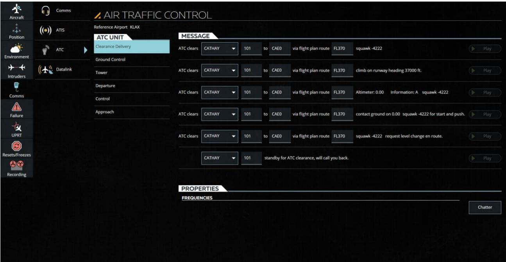
图 23：ATC 页面（Figure 166）
放行许可（Clearance Delivery）
放行许可页面显示可自定义播放的放行许可消息类型。
| 参数/控件 | 功能说明 |
|---|---|
| 航空公司 Airline | 显示航空公司名称，选择后显示下拉菜单，允许选择要在消息中播报的航空公司名称 |
| 航班号 Flight Number | 显示当前航空公司航班号，选择后显示键盘，允许输入新的航班号 |
| 目的地机场 Destination Airport | 显示状态，选择后显示键盘，允许输入目的地机场名称（仅放行许可页面可用） |
| 飞行高度层 Flight Level | 显示状态，选择后显示键盘，允许输入 ATC 放行的飞行高度层（Min=0, Max=动态最大值） |
| 播放 Play | 播放相应的消息 |
| 频率 Frequency | 显示所选 ATC 消息类型的活动通信频率 |
| 背景通信 Background Comms | 显示状态，选择后根据所选 ATC 页面类型激活/停用无线电背景通信 |
地面管制（Ground Control）
地面管制页面显示可自定义播放的地面管制消息类型。
| 参数/控件 | 功能说明 |
|---|---|
| 航空公司 Airline | 同放行许可页面 |
| 航班号 Flight Number | 同放行许可页面 |
| 滑行路线 Taxi Route | 显示状态，选择后允许输入 ATC 消息联系中的滑行路线 |
| 联系 Contact | 显示当前移交的下一指定无线电联系管制员，选择后显示下拉菜单 |
| 联系 — 下一频率 Contact — Next Frequency | 显示状态，选择后允许输入下一管制员的频率（Min=118.0, Max=136.97） |
其他 ATC 页面
上述每个 ATC 消息页面均包含针对特定类型无线电台的通用信息。除放行许可和地面管制外，其余四类页面同样支持选择航空公司、航班号、飞行高度层/频率/背景通信等通用参数，并显示可自定义播放的对应类别消息类型。
| 页面 | 消息类型 | 说明 |
|---|---|---|
| 塔台 Tower | 塔台消息 | 显示可自定义播放的塔台消息类型。页面包含与放行许可/地面管制类似的通用参数选择 |
| 离场 Departure | 离场消息 | 显示可自定义播放的离场消息类型。页面包含与放行许可/地面管制类似的通用参数选择 |
| 管制 Control | 管制消息 | 显示可自定义播放的管制消息类型。页面包含与放行许可/地面管制类似的通用参数选择 |
| 进近 Approach | 进近消息 | 显示可自定义播放的进近消息类型。页面包含与放行许可/地面管制类似的通用参数选择 |
2.6 故障（Failure）
故障按钮提供访问页面的途径，允许教员触发故障、跳闸/弹出断路器、触发电台故障，并获取以下内容的总体状态：
| 功能类别 | 说明 |
|---|---|
| 触发故障 Trigger Failures | 激活特定系统或部件的故障模拟 |
| 跳闸/弹出断路器 Trip/Pop Circuit Breakers | 模拟断路器跳闸或弹出 |
| 触发电台故障 Trigger Radio Failures | 使地面无线电台导航组件失效 |
| 总体状态监控 Overall Status | 获取武装且活跃的故障、跳闸/触发的断路器、失效无线电台的总体状态 |
从高级菜单进入的「故障」、「断路器」和「故障汇总」子页面，其控制功能与从控制面板访问的对应滑动面板相同（详见第 8.12、8.13 和 8.14 节）。详见 1.2.4 飞机/航空器选项卡。
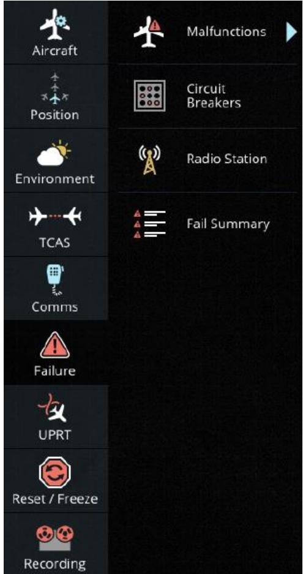
图 24：高级 — 故障（Figure 167）
2.6.1 无线电台页面（Radio Stations）
允许教员浏览所选区域附近地面无线电台的导航数据库，以便：
- 使所选地面无线电台的导航组件失效/重置
- 重新定位到所选无线电台
- 显示飞机到电台的距离/方位角及识别码/通信类型
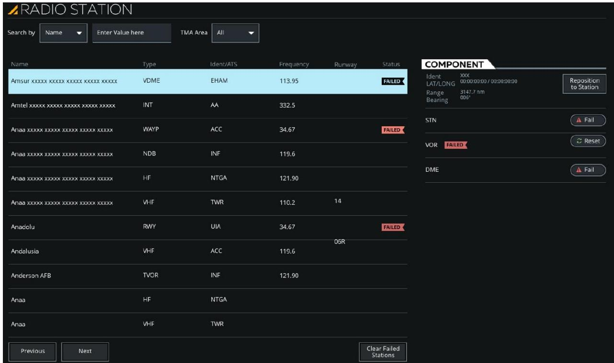
图 25：无线电台页面（Figure 168）
| 功能 | 说明 |
|---|---|
| 列表方式 List Mode | 按电台名称 By Name / 按识别码 By Identifier / 按终端区域（TMA）By TMA |
| 列表信息 List Information | 电台名称和类型、识别码、频率、跑道编号、状态 |
| 重置 Reset | 重置所选失效无线电台 |
| 失效 Fail | 使所选无线电台失效 |
| 清除失效电台 Clear Failed Radios | 重置所有由教员设为失效的无线电台 |
| 重新定位到电台 Reposition to Station | 激活重新定位到所选电台（显著经纬度变化时禁用） |
2.7 UPRT（预防与恢复训练）
UPRT 按钮可进入异常恢复页面，允许教员触发基于机动的训练（MBT）练习或基于场景的训练（SBT）练习。
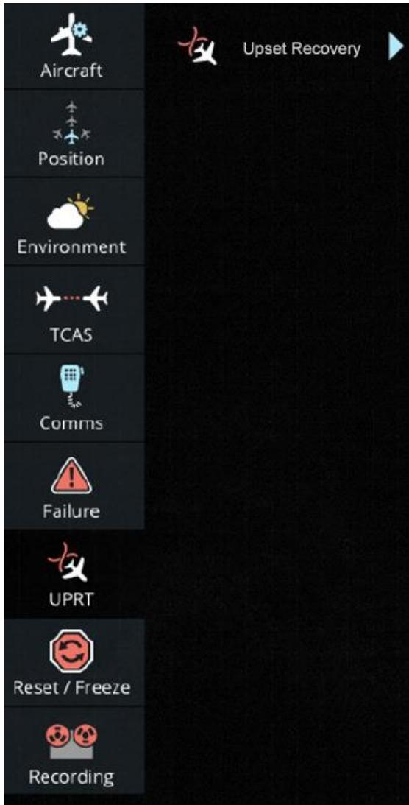
图 26：高级 — UPRT 按钮（Figure 169）
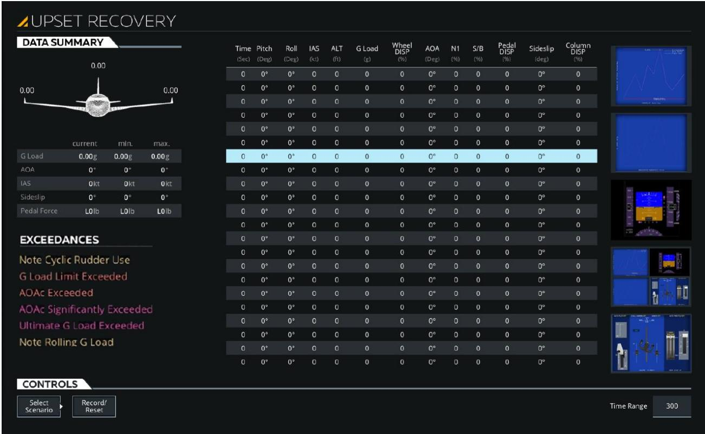
图 27：异常恢复页面（Figure 170）
2.7.1 数据汇总选项卡（Data Summary）
「数据汇总」选项卡在 UPRT 场景进行过程中显示实时飞行数据，并提供最关键的 UPRT 数据参数摘要。包含以下部分：
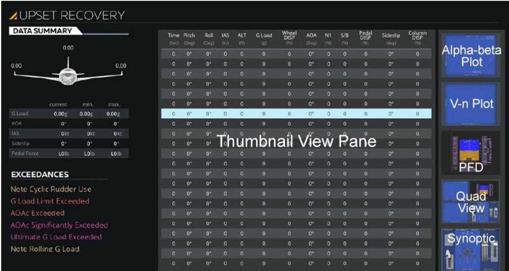
图 28：数据摘要选项卡（Figure 171）
关键参数列表（Critical Parameters）
此部分显示以下五个关键参数的信息，每列提供：当前值、最小值、最大值。在场景录制过程中，每列的值会实时持续更新。在回放模式下，仅「当前值」列会更新。
| 参数 | 英文 |
|---|---|
| 载荷因数 | Load Factor |
| 迎角 | AOA |
| 指示空速 | IAS |
| 侧滑角 | Sideslip |
| 脚蹬力 | Rudder Force |
缩略图（Thumbnails）
「数据摘要」选项卡中的缩略图代表辅助教员评估练习表现的主要工具。点击后将在缩略图查看窗格中显示。缩略图包括：
| 缩略图 | 说明 |
|---|---|
| Alpha-Beta 曲线图 | 将迎角（AOA）绘制在 Y 轴上，侧滑角绘制在 X 轴上。最多可显示三个包线（高/中/低置信度），对应襟翼收起/放下状态。包含四条与失速角相关的水平线：零升力（绿）、失速警告（绿）、临界迎角 AOAc（琥珀）、急性失速（红） |
| V-n 曲线图 | 将 G 载荷绘制在 Y 轴上，指示空速（IAS）绘制在 X 轴上。三个彩色包线表示逐渐升高的关注等级：绿色、琥珀色、红色 |
| 主飞行显示（PFD） | 复制驾驶舱 PFD 的部分内容，显示约 15 个对 UPRT 训练有用的 PFD 类型参数。为通用 PFD 图形，并非所模拟飞机的实际 PFD 复制 |
| 总览页面（Overview） | 复制驾驶舱主要控制装置，包含页面顶部和底部的状态读数、各种控制装置示意图（部分包含实际读数）。示意图仅用于代表所模拟飞机的控制装置，详细程度以满足 UPRT 训练需求为准 |
| 时间历程（Time History） | 以表格形式按时间顺序显示与所选 UPRT 场景最相关的参数（俯仰角、滚转角、指示空速、高度、载荷因数、油门、侧滑、驾驶杆、方向舵、副翼、偏航角等）。可与录制过程配合使用，讲师可同时监控图表页面和驾驶舱复示器 |
| 四视图（Quad View） | 同时显示 Alpha-Beta 图、V-n 图、PFD 和总览页面 |
超限部分（Exceedances）
本节列出在记录阶段发生的超限事件对应的咨询级别信息。颜色信息对应 Alpha-Beta 图和 V-n 图页面中规定的咨询级别颜色规则，并按严重程度顺序显示。这些信息随后可根据严重程度顺序用于学员讲评。
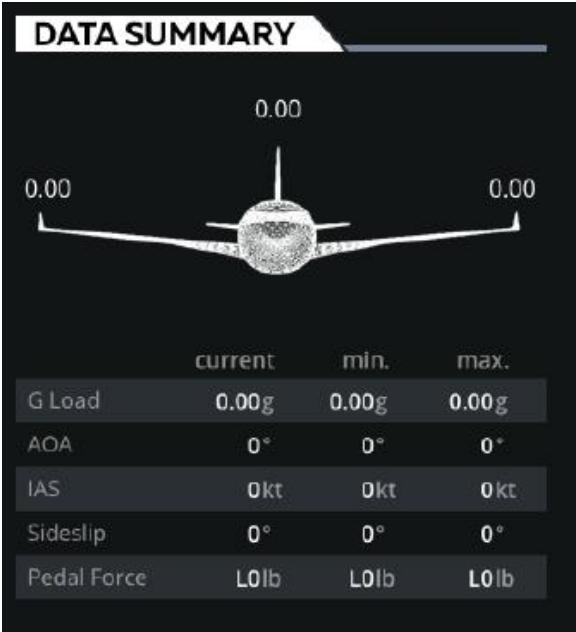
图 29：关键参数（Figure 172）
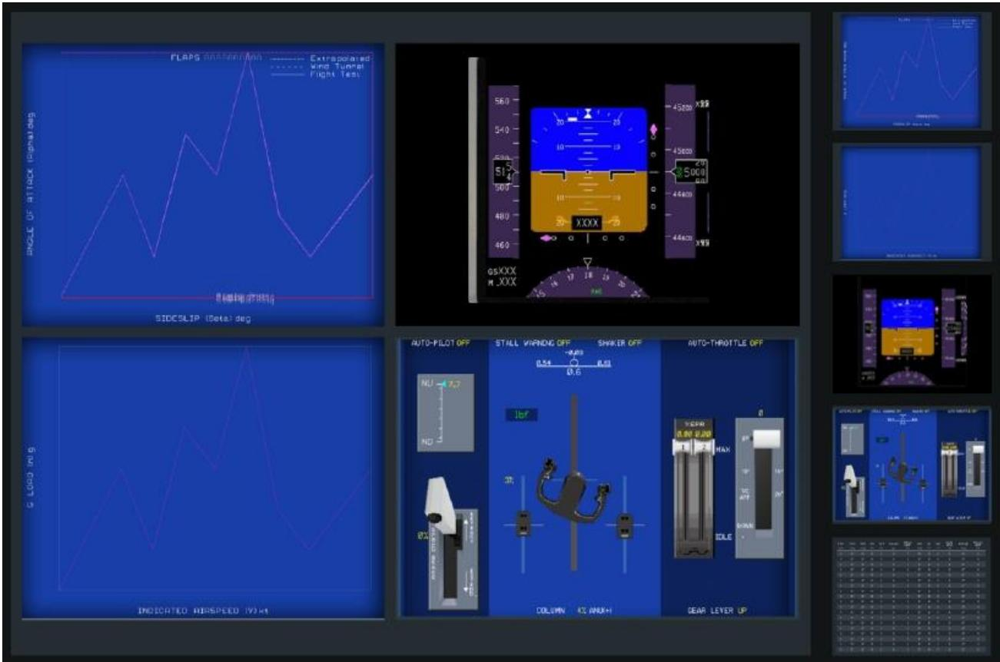
图 30：四视图（Figure 174）
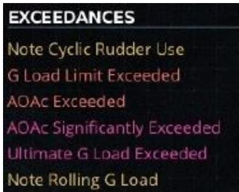
图 31：超限事件（Figure 176）
2.7.2 控制选项卡（Controls）
此选项卡包含必要的控制功能，用于：显示 UPRT 场景页面、记录选定的异常状态场景、确定图表上绘制的点数（数据点）、在记录中插入标记、回放记录以进行座舱内讲评。
控制选项卡功能一览
| 功能 | 说明 |
|---|---|
| 选择场景 Select Scenario | 点击此可展开按钮以显示 UPRT 场景页面，选择基于机动训练（MBT）或基于场景训练（SBT）练习 |
| 记录/重置 Record / Reset | 点击记录/重置按钮进入记录模式。在此模式下，选定的异常状态场景正在被记录。一旦启动记录模式，可通过点击停止按钮手动停止，或在最大记录时间（5 分钟或 300 秒）到期后自动停止。场景的最大长度为 5 分钟或 300 秒。在场景记录期间，教员可在记录中插入标记。部分标记包括：开始 Start、G 载荷 G-Load、失速 Stall、机头上仰 Nose Up、机头下俯 Nose Down、滚转 G Roll G、其他 Other、结束 End。这些标记旨在便于与飞行机组进行座舱内讲评 |
| 时间范围 Time Range | 点击输入文本字段以指定在记录期间图表上绘制的最大点数（数据点）。时间范围基本上允许教员根据经过时间指定图表上显示的最大点数，这可以作为简化图表的一种手段 |
| 回放模式 Review Mode | 回放模式允许教员回放整个场景记录或由教员添加到记录时间轴上的开始和结束标记定义的场景记录部分。在记录阶段，所有 300 秒的数据都会被存储，并可在回放模式下用于回放。飞行冻结或完全冻结会暂停记录模式。在记录期间，教员可通过专注于记录练习的某个阶段来为回放模式做准备。这可通过在教员希望与飞行机组回顾的时刻插入开始和结束标记来实现 |
| 可选标记 Optional Markers | 控制选项卡可包含可选标记 |
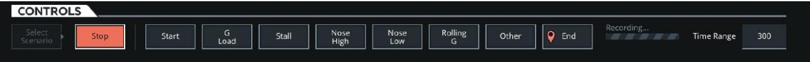
图 32：记录标记（Figure 178）
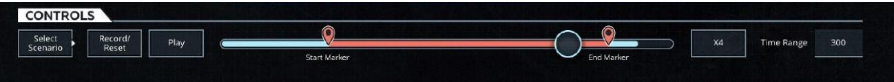
图 33：回放模式（Figure 179）
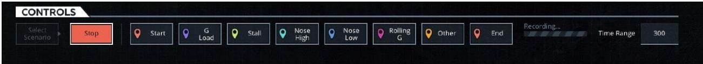
图 34：可选标记（Figure 180）
2.7.3 UPRT 场景页面（UPRT Scenarios）
此页面提供所有必要控制，使教员能够启动基于机动训练（MBT）或基于场景训练（SBT）的练习，持续时间最长可达 5 分钟或 300 秒。
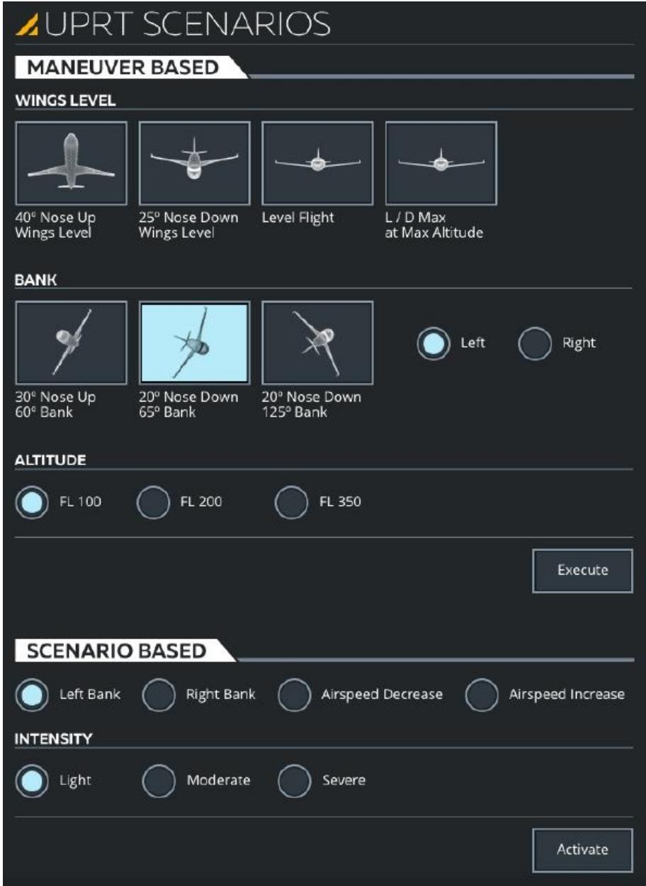
图 35：UPRT 场景页面（Figure 181）
基于机动（Maneuver Based Training — MBT）
此选项卡包含可由教员触发的基于机动的异常姿态场景。这些场景分为以下部分：
| 部分 | 场景选项 | 说明 |
|---|---|---|
| 机翼水平 Wings Level | 40° 机头上仰 25° 机头下俯 平飞 最大升阻比在最大高度 | 互斥的场景按钮，点击后将飞机重新定位到所选场景 |
| 坡度 Bank Angle | 30° 机头上仰，60° 坡度 20° 机头下俯，65° 坡度 20° 机头下俯，125° 坡度 | 互斥的场景按钮。互斥的左/右单选按钮控制向左或向右的坡度机动 |
| 高度 Altitude | FL100 FL200 FL350 | 互斥的高度单选按钮，点击后将 MBT 练习设置为所选高度 |
| 执行 Execute | — | 点击此按钮以激活所选 MBT UPRT 剖面。基于机动的场景类似于重新定位，当飞行冻结开启时，飞机会进入所选基于机动的场景，直到飞行冻结解除 |
基于场景（Scenario Based Training — SBT）
此选项卡包含可由教员触发的基于场景的异常姿态场景。这些场景由互斥的单选按钮组成，并配对为：
- 左坡度 – 右坡度
- 空速减小 – 空速增加
这类场景类似于一阵阵风，会逐渐将飞机置于所选异常姿态状态。
| 参数 | 说明 |
|---|---|
| 强度 Intensity | 允许教员将所选场景的强度设置为轻度 Light / 中度 Moderate / 重度 Severe |
| 激活 Activate | 点击此按钮以激活所选基于场景的场景 |
2.8 重置/冻结（Resets/Freezes）
重置/冻结按钮显示重置与冻结页面，其中包含与控制板工作区页脚相同的重置和冻结选项。
功能与控制面板底部完全相同。详见 1.2.7 控制面板底部。
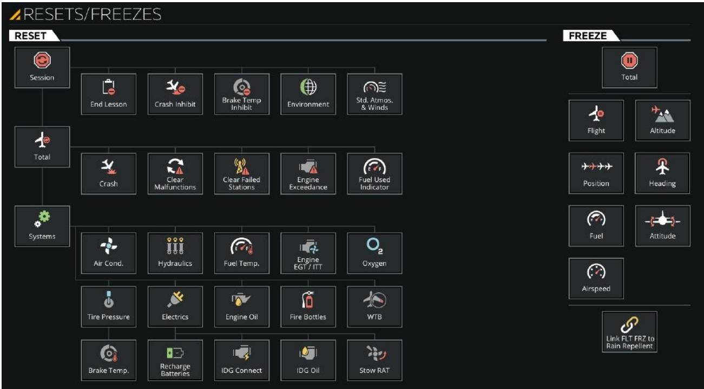
图 36：高级 — 重置/冻结（Figure 182）
2.9 录制（Recording）
录制按钮允许教员捕捉各种飞行状态，并随后永久保存和/或调用这些状态。
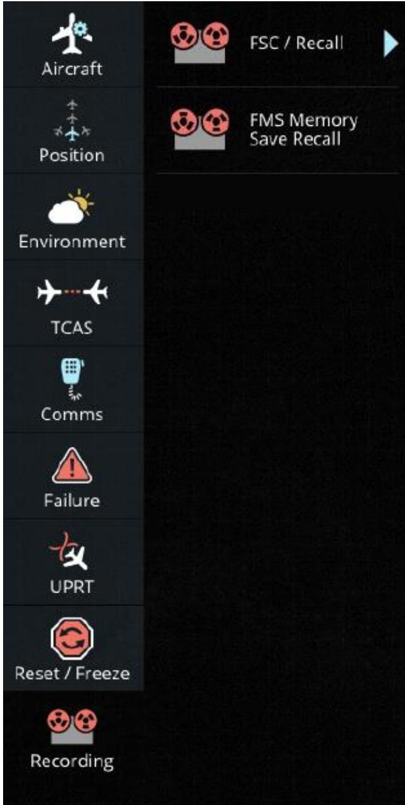
图 37：高级 — 录制（Figure 183）
2.9.1 飞行状态捕捉/调用（FSC/Recall）
| 功能/参数 | 说明 |
|---|---|
| 核心功能 | 飞行状态捕捉/调用页面允许教员在训练过程中记录最多 10 种预定义参数的不同飞行状态，并在之后恢复这些状态。调用功能以类似于常规飞机重新定位的方式执行 |
| 空中状态调用 | 对于空中状态的调用，通过调整飞机配平来实现，这与空中重新定位的正常操作一致。模拟器可能无法恢复到与捕捉时完全相同的状态，但会处于相似的条件 |
| 非反向驱动飞行控制 | 对于非反向驱动的飞行控制，将出现「控制不一致（CNIA）」页面，指示控制装置应处于的位置。当飞行冻结解除后，飞行员可以从捕捉点继续训练课程。当飞行冻结解除后，飞行员应能够继续训练课程 |
| 复制到存储的捕获 Copy to Stored Capture | 显示飞行状态转移页面，用于将临时捕获转换为永久存储捕获。如果存在捕获、召回、重新定位或扫描操作，该按钮将处于禁用或灰色状态 |
| 清除所有捕获 Clear All Captures | 选择后会显示「清除所有捕获」弹出菜单，需要确认操作 |
2.9.2 FMS 内存保存/召回（FMS Memory Save/Recall）
| 功能 | 说明 |
|---|---|
| FMS 内存保存/召回 FMS Memory Save/Recall | 显示状态，选择后激活保存/召回所选 FMS 内存飞行计划的过程 |
三、全局操作流程与推导
3.1 高级工作区教员核心操作流程全景图
3.2 参数设置通用状态机
| 状态 | 说明 | 进入条件 |
|---|---|---|
| 空闲状态 Idle | Advanced 工作区已打开，未选择任何功能模块 | 进入工作区或完成操作后 |
| 模块选择中 Module Selected | 已点击某个高级功能按钮，显示对应子页面 | 点击飞机/位置/环境/入侵者等按钮 |
| 参数编辑中 Editing | 在子页面中修改参数或选择选项 | 选择子功能后进入编辑界面 |
| 值已修改 Value Modified | 参数值已被教员修改但尚未确认生效 | 输入新值或切换选项 |
| 参数生效中 Applying | 指令正在下发至模拟器 | 点击确认/更新/激活按钮 |
| 生效完成 Applied | 参数已生效，模拟器反馈确认 | 模拟器返回生效完成信号 |
3.3 关联依赖与异常边界
3.3.1 关联依赖表格
| 功能模块 | 依赖对象 | 依赖关系说明 |
|---|---|---|
| 飞机（Aircraft） | 控制面板 2.2.4 | 完全复用 Weight & Balance 和 Services & Doors 滑动面板 |
| 位置（Position） | 控制面板 2.2.3 / 2.2.5 | 完全复用 Airport & Reposition 和 SLEW 滑动面板 |
| 环境 — 风切变/结冰/时段 | 控制面板 2.2.3 / 2.2.5 | 功能与参考机场/当前条件选项卡中的对应功能完全相同 |
| 重置/冻结 | 控制面板页脚 2.2.7 | 完全复用 Footer 中的重置和冻结选项 |
| ATIS 自动模式 | 环境页面天气参数 | 自动模式下 ATIS 消息随环境天气变化实时同步更新 |
| UPRT 记录 | 飞行冻结 | 飞行冻结或完全冻结会暂停记录模式 |
| 无线电台重新定位 | 视觉系统 | 显著经纬度变化时重新定位按钮禁用，直至视觉准备就绪 |
3.3.2 异常边界表格
| 异常场景 | 触发条件 | 系统行为 |
|---|---|---|
| ATIS 自动模式下修改天气按钮 | 教员在自动模式下尝试点击天气输入按钮 | 按钮禁用/灰显，无法修改；必须先切换至手动模式 |
| TCAS 场景训练不稳定飞行 | 本机不在稳定飞行状态下进行 TCAS 场景训练 | 下降时低于 1000ft AGL / 爬升时低于 1200ft AGL，DESCEND DESCEND 垂直引导被抑制 |
| 无线电台重新定位时视觉未就绪 | 显著经纬度变化后视觉系统尚未准备就绪 | 重新定位到电台按钮禁用 |
| UPRT 记录超过最大时长 | 场景记录达到 5 分钟（300 秒） | 自动停止记录 |
| 飞行状态调用时控制不一致 | 非反向驱动飞行控制的飞机状态调用 | 显示 CNIA（Controls Not In Agreement）页面，提示控制装置应处位置 |
| FSC 按钮禁用 | 存在捕获、调用、重新定位或扫描操作 | 复制到存储的捕获按钮禁用/灰显 |
3.4 数据流与开发流程推导
3.4.1 数据流
教员操作（选择模块/修改参数/激活场景）
|
▼
UI 事件层 ——→ 模块切换事件 / 参数变更事件 / 场景激活事件
|
▼
状态管理层 ——→ 更新当前模块状态 / 参数草稿状态 / 场景运行状态
|
▼
模拟器指令层 ——→ 下发参数变更至模拟器核心
同步 ATIS/ATC 消息至语音系统
下发入侵者轨迹至交通模拟系统
下发 UPRT 场景至飞行模型
|
▼
反馈呈现层 ——→ 高级工具栏状态更新
数据汇总实时刷新
超限事件记录
录制状态/回放进度更新3.4.2 API 接口契约建议
| 接口 | 方法 | 请求字段 | 响应字段 | 错误码 |
|---|---|---|---|---|
| /advanced/weather/save | POST | regionId, scenarioName, params | scenarioId, status | 400 参数缺失 / 500 保存失败 |
| /advanced/weather/recall | POST | scenarioId | params, status | 404 场景不存在 |
| /advanced/intruder/tcas/start | POST | position, verticalPath, scenarioType, transponder | scenarioId, status | 400 无效场景 / 409 场景运行中 |
| /advanced/atis/update | POST | airportId, mode, params | broadcastId, status | 403 自动模式禁止修改 |
| /advanced/atc/play | POST | stationType, messageParams | audioId, status | 400 频率无效 |
| /advanced/uprt/record/start | POST | scenarioType, params | recordId, status | 409 记录中 / 503 系统忙 |
| /advanced/uprt/record/stop | POST | recordId | status, summary | 404 记录不存在 |
| /advanced/fsc/capture | POST | slotIndex | captureId, status | 409 槽位已占用 |
| /advanced/fsc/recall | POST | captureId | status, cniaFlag | 404 捕获不存在 |
四、测试要点
| 测试维度 | 测试场景 | 验收标准 |
|---|---|---|
| 正向路径 | 高级工具栏各按钮正确打开对应子页面 | 每个按钮点击后显示正确的子页面，无 404 或空白 |
| 正向路径 | 环境 — 天气区域保存并调用场景 | 保存后场景列表中出现新场景，调用后天气参数正确恢复 |
| 正向路径 | ATIS 自动模式随天气变化同步更新 | 修改环境天气后，ATIS 消息在 1 秒内自动更新 |
| 正向路径 | ATIS 手动模式覆盖并更新广播 | 切换手动模式后所有按钮启用，修改参数后点击更新广播生效 |
| 正向路径 | TCAS 六种场景正确触发并生成对应音频 | 每种场景触发后，在预定时间点听到正确的 TCAS 语音（TRAFFIC/RA/CLEAR OF CONFLICT） |
| 正向路径 | UPRT MBT 场景在飞行冻结时正确设置飞机姿态 | 飞行冻结开启后，飞机进入所选 MBT 姿态，冻结解除后保持 |
| 正向路径 | UPRT 记录和回放完整 300 秒数据 | 记录满 300 秒后自动停止，回放时所有数据点正确显示 |
| 异常路径 | ATIS 自动模式下点击禁用按钮 | 按钮无响应，无后端请求发出 |
| 异常路径 | TCAS 场景训练不稳定飞行（低于 AGL 限制） | DESCEND DESCEND 垂直引导被抑制，不发出下降指令 |
| 异常路径 | FSC 捕获时尝试第二次捕获 | 第二次捕获按钮禁用，提示已有活跃捕获 |
| 边界条件 | 天气区域添加超过 5 个区域 | 系统阻止添加第 6 个区域，或最早区域被替换 |
| 边界条件 | 无线电台重新定位时快速切换位置 | 按钮在视觉未就绪期间保持禁用，就绪后恢复 |
| 联动测试 | 高级环境参数修改后控制面板同步 | 高级中修改天气/灯光后，控制面板对应参数实时同步 |
| 联动测试 | UPRT 记录期间触发飞行冻结 | 记录暂停，解冻后从暂停点继续记录 |
五、变更记录
| 日期 | 版本 | 变更内容 |
|---|---|---|
| 2026-06-05 | V1.0 | 初始版本：基于 A320.md 2.7 章节与原始手册 ## 16 章生成高级工作区 HTML。涵盖飞机、位置、环境（天气区域/灯光/机场视觉效果）、入侵者（TCAS/随机/进近/ITP）、通信（ATIS/ATC）、故障、UPRT、重置/冻结、录制共 10 大子模块，配套 36 张截图，含状态机、数据流与 API 契约推导 |
| 2026-06-08 | V1.1 | 结构化重构 2.4.4 ~ 2.9 章节内容：将 ITP、ATIS 参数、ATC 其余页面、UPRT 控制选项卡、录制（FSC/FMS）等段落式描述改为表格化呈现，补充 ATIS 自动/手动模式详细行为、各天气参数独立条目、ATC 塔台/离场/管制/进近页面汇总表，确保与 A320.md 原文逐句对齐无信息丢失 |